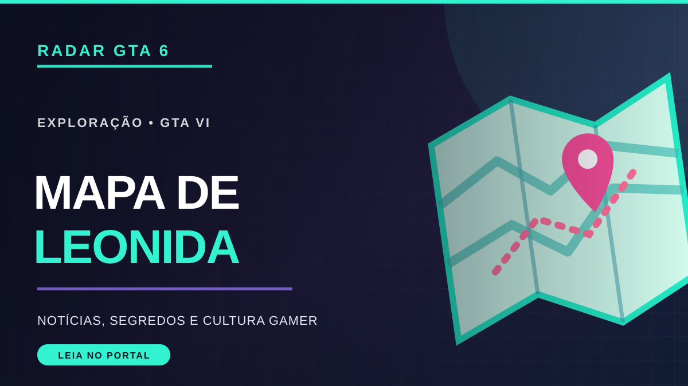
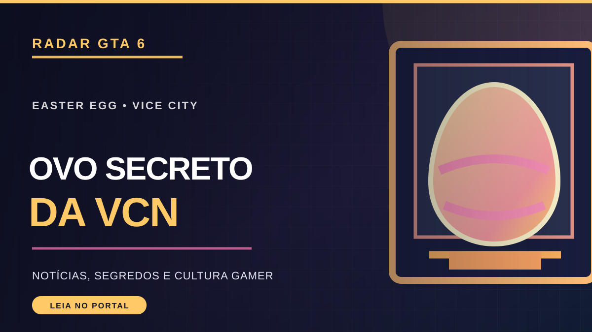
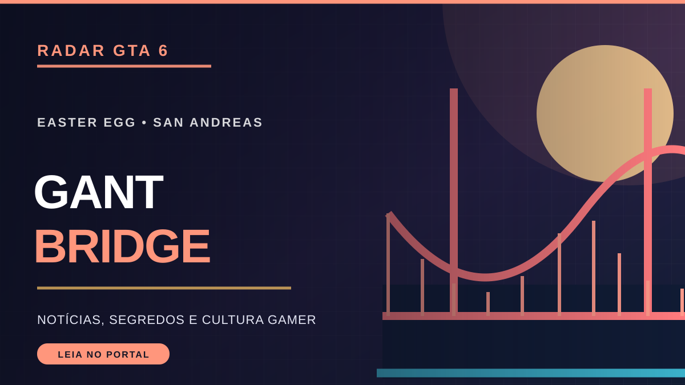

Expectativas
Uma polícia mais inteligente?
O que esperamos da inteligência artificial e das perseguições em GTA VI.
O universo de GTA VI num só lugar. Notícias, teorias, curiosidades e tudo o que a comunidade quer descobrir.
EXPLORAR O RADAR →
A Rockstar confirmou o lançamento em 19 de novembro. Saiba as plataformas e os detalhes oficiais.

Veja onde acessar o mapa e o pôster disponibilizados pela Rockstar.
O que esperamos da inteligência artificial e das perseguições em GTA VI.

Praias, cidades, estradas e possibilidades para explorar.

As expectativas que estão movimentando os fãs de GTA VI.
Guias para encontrar lugares escondidos nos jogos clássicos da franquia GTA.

Onde fica a janela secreta de Downtown e como entrar na sala do ovo de chocolate.

O caminho até o banheiro secreto com motosserra em Ocean Beach.

Mount Gordo, Mount Chiliad e o disco voador submerso: como encontrar cada um.

Descubra a mensagem que a Rockstar deixou no alto da ponte de San Fierro.
Em breve, os Shorts e vídeos do Radar GTA 6 estarão aqui.